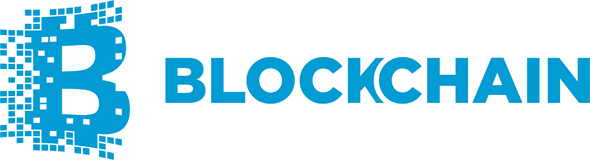
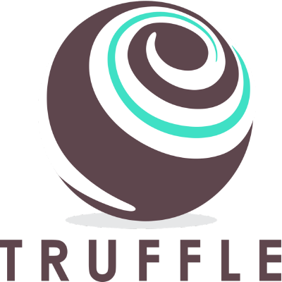

Research
a. The platforms
Blockchain
Our concept revolves around the idea of eliminating a third party through Blockchain. A Blockchain is a continuously-growing public ledger which contains records grouped in entities called Blocks. Everyone in the network has an updated copy of the ledger, and data cannot be modified or deleted once it’s on the Blockchain. The value of this technology lays in the elimination of a “Central Authority”, and its replacement by all the nodes in the Blockchain network. In fact, a distributed consensus system is in place to confirm that the data which enters the Blockchain is valid, by imposing strict cryptographic rules that are verified by miners.[1]
The advantages of Blockchain
The most important advantages of Blockchain are security and efficiency. First, having different copies of the ledger, but not any central one which is trusted more than the others, makes it hard to break or hack. Secondly, going through third parties takes a long time, and that’s why international transactions can take days for example. Blockchain just needs a few minutes to verify a record it. Lastly, involving a third party can be very expensive while Blockchain only requires some very minimal operating costs.
Why does Blockchain fit our project?
We believe that currently, the notarisation process is long, tedious and quite expensive, even more so when thinking about documents that need to be exchanged between parties from different countries. A blockchain based notary application would fit perfectly in this scenario to make the process go a lot faster, cheaply. Just as Bitcoin transactions can be verified using Blockchain, so can documents be authenticated via the same means.

Bitcoin
Bitcoin is a cryptographic currency; it is a payment system that allows making transactions directly without getting a third party involved in the exchange. In other words, it is a peer-to-peer connection. The transactions are stored in the blockchain, which verifies that the money is not in two hands at once. The system works without a central unit or a unique administrator: it is decentralized.[2]

Ethereum
Ethereum is a public blockchain based distributed computing platform, featuring smart contract functionality. Smart contracts are objects which contain functions and variables and which can interact with other contracts, make decisions, store data and send ether (Ethereum cryptocurrency).[3]
Ehteruems advantages over Bitcoin and why is it suitable for our app
We decided to go with Ethereum because it’s built in smart contract features is way more advantageous for the purpose of our system. Through smart contracts, we can authenticate the signatures on a document.
b. Programming languages, tools and libraries

MeteorJS, an alternative to Node
MeteorJS, an alternative to Node
We decided to use MeteorJS as the main development platform. Meteor is a new technology which functions as a full stack platform, offering simplicity, speed and reactivity. Meteor’s built in package system made it very easy to add additional items to our system such as user accounts through the accounts-ui and accounts-password packages, a documents database through collectionFS, all just by typing in a few commands on the terminal.[4]
Truffle - Ethereum development framework
While reading through the forums for an Ethereum development environment, we quickly discovered that Truffle was suggested by many as being the leading technology when it comes to developing and deploying smart contracts, and, therefore, it became our ethereum framework of choice.[5]
HTML5, CSS3, Javascript - The Front End
We decided to stick with the basics of front end development to not overcomplicate the scope of our project. During development, we also tried using ReactJS, but after a while we ended up dropping it because of the multitude of issues that it caused in relation to routing, document uploading and others. Firstly, Reacts capabilities proved promising, but given the fact that Meteor is a relatively new platform and so is React, some conflicting issues made us decided to stick with basic Javascript

MongoDB with CollectionFS - The Back End
The Meteor platform has a built in mini-mongo database system, so it was easy for us to make use of it out of the box. CollectionFS is a meteor package/library that enabled us to upload and view documents in the MongoDB instance created from the start of the application.[6]
Testrpc
Testrpc is based on Ethereum client based, and is a Node.js, it used for testing and development. It simulates complete client behavior and make Ethereum applications faster. It has all the popular RPC functions and features (such as events) and can be run deterministically to make development easier.
Web3.js
This JavaScript API is Ethereum compatible, it implements the generic JSON RPC specification. We used this tool to calculate the sha3 hash of a pdf document (*), and to trigger the smart contract lying in testRPC (referenced by its address and abi)
c. Summary of Final Decision
Our system was developed through the Meteor Javascript platform by making use of the Truffle JS framework for ethereum integration and HTML5, CSS and Javascript for the front end. For the back end, we have opted to use Meteor’s built in MongoDB database using the CollectionFS package. While considering alternatives for the developer platforms we felt that mobile applications are not very often trusted for operations dealing with confidential documents. Therefore we decided to build a web app.
d. References
- https://www.blockchain.com/
- https://bitcoin.org/
- https://www.ethereum.org/
- https://www.meteor.com/
- http://truffleframework.com/
- https://github.com/CollectionFS/Meteor-CollectionFS